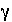
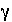
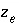
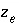

Explanation
Keyword for the data block. No other data are input on the keyword line.
Association reaction for exchange species. The defined species must be the first species to the right of the equal sign. The association reaction must precede any identifiers related to the exchange species. Master species have an identity reaction (lines 1a and 1d).
log_k--Identifier for log K at 25 o C. Optionally, -log_k, logk, -l[ og_k], or -l[ ogk].
log K --Log K at 25 o C for the reaction. Unlike log K for aqueous species, the log K for exchange species is implicitly relative to a single exchange species. In the default database file, sodium (NaX) is used as the reference and the reaction X - + Na + = NaX is given a log K of 0.0 (line 2b). The log K for the exchange reaction for the reaction given in line 2c is then numerically equal to the log K for the reaction 2NaX + Ca +2 = CaX 2 + 2Na + . Master species have log K of 0.0 (lines 2a and 2d); reactions for reference species also have log K of 0.0 (lines 2b and 2e). Default is 0.0.
Line 3: -gamma Debye-Hückel a, Debye-Hückel b
-gamma--Indicates WATEQ Debye-Hückel equation will be used to calculate an activity coefficient for the exchange species. If -gamma or -davies is not input for an exchange species, the activity of the species is equal to its equivalent fraction. If -gamma is entered, then an activity coefficient of
the form of WATEQ (Truesdell and Jones, 1974),  , is multiplied times the equivalent fraction to obtain activity for the exchange species. In this equation, 
is the activity coefficient,
, is multiplied times the equivalent fraction to obtain activity for the exchange species. In this equation, 
is the activity coefficient,  is ionic strength,
A
and
B
are constants at a given temperature, and 
is the number of equivalents of exchanger in the exchange species. Optionally,
gamma or
-g[
amma].
is ionic strength,
A
and
B
are constants at a given temperature, and 
is the number of equivalents of exchanger in the exchange species. Optionally,
gamma or
-g[
amma].
Debye-Hückel a --Parameter a o in the WATEQ activity-coefficient equation.
Debye-Hückel b --Parameter b in the WATEQ activity-coefficient equation.
-davies--Indicates the Davies equation will be used to calculate an activity coefficient. If
-gamma or
-davies is not input for an exchange species, the activity of the species is equal to its equivalent fraction. If
-davies is entered, then an activity coefficient of the form of the Davies equation,  , is multiplied times the equivalent fraction to obtain activity for
, is multiplied times the equivalent fraction to obtain activity for
the exchange species. In this equation,  is the activity coefficient,
is the activity coefficient,  is ionic strength,
A
is a constant at a given temperature, and
is ionic strength,
A
is a constant at a given temperature, and  is the number of equivalents of exchanger in the exchange species. Optionally,
davies or
-d[
avies].
is the number of equivalents of exchanger in the exchange species. Optionally,
davies or
-d[
avies].